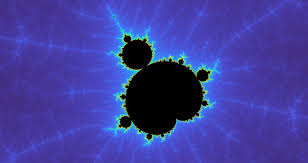
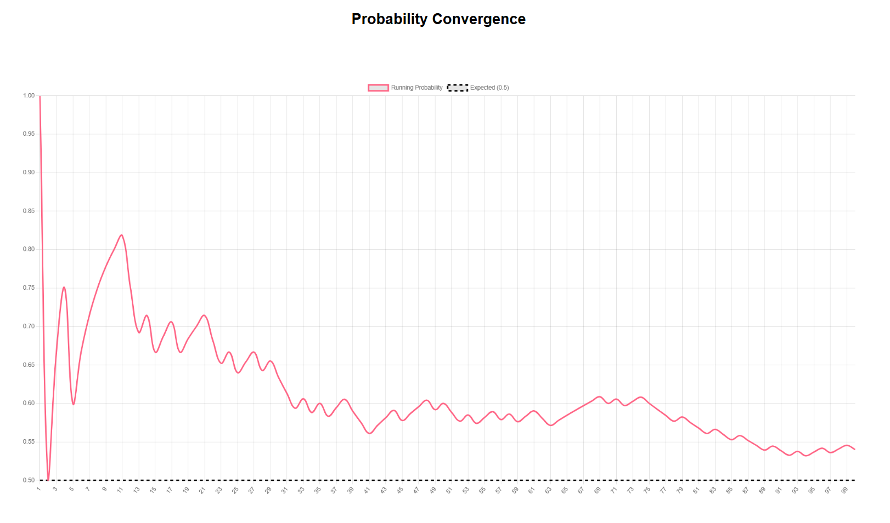
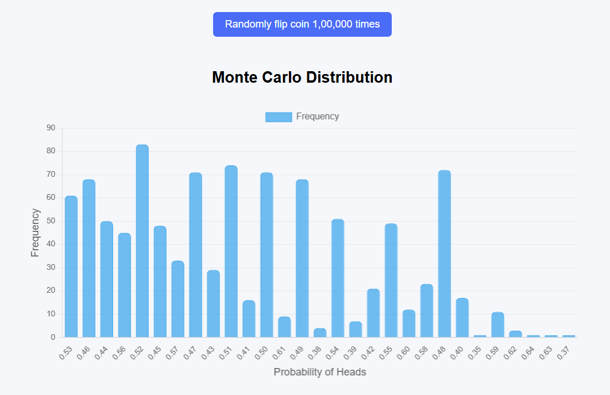

Mandelbrot Set
The Mandelbrot set is a famous fractal defined by repeatedly applying a simple complex quadratic equation. It reveals infinite boundary detail and self-similar patterns as you zoom deeper into its structure.

Martingale Strategy
The Martingale strategy is generally considered a bad and highly dangerous strategy for long-term betting or investing. While it guarantees frequent, small wins in the short term, it exposes you to catastrophic financial ruin during inevitable losing streaks.
